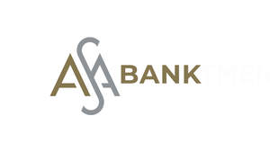

Trade Mark Journal No.2025/011 14 March 2025
UK00004163580 21 February 2025 (36)

- Class 36
- Bank account monitoring services; credit card management; debit card management; management of portfolios of transferable securities; hospital and healthcare insurance management; investment funds management; savings management; insurance management; health insurance management; financial management of meal ticket; financial management; autonomous investment advice; virtual office rental [commercial rental]; office rental [real estate]; co-working office rental; credit analysis and management; financial analysis; technical advice relating to credit lines; advisory, consultancy and management services of third-party investments; banking advisory, consultancy and information services; advisory, consultancy and information services relating to debt management; advisory, consultancy and information services relating to wealth management; advisory, consultancy and information services relating to financial risks management; advisory, consultancy and information services relating to antique appraisal; advisory, consultancy and information services relating to jewelry appraisal; advisory, consultancy and information services relating to artwork appraisal; advisory, consultancy and information services relating to stamp appraisal; advisory, consultancy and information services relating to real estate appraisal; advisory, consultancy and information services relating to numismatic appraisal; advisory, consultancy and information services relating to collection of payments and register; advisory, consultancy and information services relating to credit; advisory, consultancy and information services relating to loans; advisory, consultancy and information relating to investment funds; advisory, consultancy and information relating to investments; stock market advisory, consultancy and information; advisory, consultancy and information services relating to financial planning; insurance advisory, consultancy and information; advisory, consultancy and specialized information services relating to private pensions; advisory, consultancy and information services in the area of financial economics; advisory, consultancy and information services relating to healthcare plans; advisory, consultancy and information services relating to health insurance; financial advisory, consultancy and information services for investors; advisory, consultancy and information services relating to actuarial science [risks management and evaluation]; advisory, consultancy and information services relating to banking investments; actuarial science; financial evaluation [insurance, banking and real estate]; financial evaluation relating to the development costs of oil, gas and mining industries; financial appraisals in responding to calls for tenders; financial appraisals in responding to requests for proposals [RFPS]; commercial bank [financial services]; investment banking [financial services]; multi-purpose banking with or without a commercial portfolio [financial services]; savings account [financial services]; retirement funds [financial services]; clearing, financial; monetary exchange; capitalization bonds [financial services]; arranging finance for construction projects; charitable fundraising; cashier cards [financial services]; foreign investor portfolio [financial services]; meal ticket [meal payment services through tickets, vouchers or coupons]; investment club [financial services]; travel medical insurance [health insurance services]; commercialization of health insurance; mortgage company [financial services]; clearing [banking]; check cashing [financial services]; assets consortium [financial services]; establishment and management of investment funds [financial services]; insurance consultancy services; financial consultancy services; brokerage; brokerage of shares and bonds; financial insurance brokerage; insurance brokerage; securities brokerage; stock exchange quotations; custody of values; securities deposits; deposits of valuables; credit notes discount; issuance of bonus of value; issuance of credit cards; issuance of travellers' cheques; issuance of debenture; issuance of tokens of value; loans against security; pawnbrokerage; loans [financing]; instalment loans; factoring; surety services; hire-purchase financing; providing discounts to third parties' establishments through the use of loyalty cards; investment funds; pension funds [retirement]; mutual funds; extended warranties: warranties [surety]; financial risk management; financial management services relating to the refund payments to others; home-banking services; information services relating to credit chocks, bonds and other documents; financial information services; insurance information services; services of financial reports relating to financial economics advice; capital investments [financing]; automobile lease financing; real estate lease financing; insurance claims settlement services; mortgage related banking operations services; exchanging money; repair costs evaluation [financial appraisal]; financial services relating to shares in other societies; financial sponsorship; savings banks; financial researches; sales credit financing and financial administration of plan of automotive technical assistance; arranging and administration of healthcare plans; processing of credit card payments; processing of debit card payments; credit protection; provision of financial information through a website; accident insurance; accidents insurance; insurance; fire insurance; health insurance; life insurance; maritime insurance; services of clearing account between business; actuarial services; banking services; remote banking services [online banking]; bank savings services; brokerage of shares services; safe deposit services; services of loan with share warranties; financing services; provident fund services; surety services; business liquidation services, financial; debt advisory services; bail-bonding; pawnbrokerage; financial services relating to refilling of magnetic cards as meal ticket, food or fuel vouchers time sharing services time sharing services; trusteeships; payment services of fees, consortiums and tuitions, provided through a website; electronic transfer of funds services; check validity verification services; services of commodities and future exchange quotations.
ASA International (BVI) LTD
Representative: K&L Gates LLP